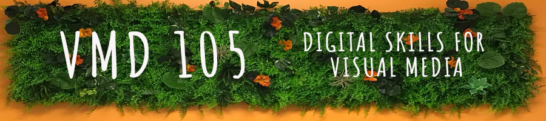
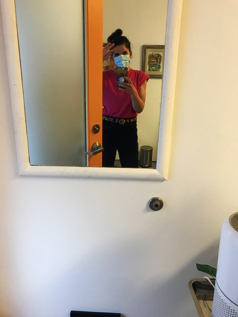

In Digital Skills for Visual Media I learned a smattering of several software applications integral to digital design. In these pages you will find examples of raster and vector graphics, animation, print media and web design – all using the Adobe “Holy Trinity” (Photoshop, Illustrator and Indesign) and Animate, which I created. While I am nowhere near proficient in these software applications, I am delighted at the competence I attained.